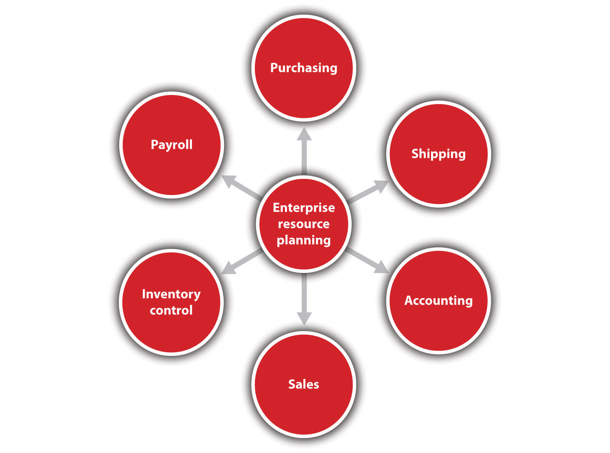

There are three threads that flow throughout this text: customer value, cash flow, and digital resources and e-environments. These threads can be likened to the human body. Cash flow is the circulatory system, without which there can be no life. Digital technology and e-business are the internal organs that carry out daily processes. E-commerce is the sensory system that enables business to observe and interact with the external environment. Customer value is overall health. These threads must figure prominently in all small business decision making. Although they are necessary but not sufficient conditions for small business survival, the chances for survival will be reduced significantly if they are not used.
In 1916, Nathan Hanwerker was an employee at one of the largest restaurants on Coney Island—but he had a vision. Using his wife’s recipe, he and his wife opened a hot dog stand. He believed that the combination of a better tasting hot dog and the nickel price, half that of his competitors, was his recipe for success. He was wrong. Unfortunately for Nathan, Upton Sinclair’s book The Jungle a decade before had made the public suspicious of low-cost meat products. Nathan discovered that his initial business model was not working. Customers valued taste and cost, but they also valued the quality of a safe product. To convince customers that his hot dogs were safe, he secured several doctors’ smocks and had people wear them. The sight of “doctors” consuming Nathan’s hot dogs gave customers the extra value that they needed. It was all about the perception of quality. If doctors were eating the hot dogs, they must be OK. Today there are over 20,000 outlets serving Nathan’s hot dogs.John A. Jakle and Keith A. Sculle, Fast Food (Baltimore: Johns Hopkins University Press, 1999), 163–64.
In principle, customer valueThe difference between the benefits a customer receives from a product or a service and the costs associated with obtaining the product or the service. is a very simple concept. It is the difference between the benefits that a customer receives from a product or a service and the costs associated with obtaining that product or service. Total customer benefitThe perceived monetary value of economic, functional, and psychological benefits customers expect from a product or a service because of the products, services, personnel, and images involved. refers to the perceived monetary value of the bundle of economic, functional, and psychological benefits customers expect from a product or a service because of the products, services, personnel, and images involved. Total customer costThe perceived bundle of costs customers expect to incur when they evaluate, obtain, use, and dispose of the product or the service., the perceived bundle of costs that customers expect to occur when they evaluate, obtain, use, and dispose of the product or use the service, include monetary, time, energy, and psychological costs.Philip Kotler and Kevin Lane, Marketing Management (Upper Saddle River, NJ: Pearson Prentice-Hall, 2009), 121. In short, it is all about what customers get and what they have to give up.
In reality, the creation of customer value will always be a challenge—particularly because it almost always needs to be defined on the customer’s terms.H. Whitelock, “How to Create Customer Value,” eZine Articles, March 16, 2007, accessed October 7, 2011, ezinearticles.com/?How-to-Create-Customer-Value &id=491697. Nonetheless, “the number one goal of business should be to ‘maximize customer value and strive to increase value continuously.’ If a firm maximizes customer value, relative to competitors, success will follow. If a firm’s products are viewed as conveying little customer value, the firm will eventually atrophy and fail.”Earl Nauman, Creating Customer Value: The Path to Sustainable Competitive Advantage (New York: Free Press, 1995), 16. This will certainly be true for the small business that is much closer to its customers than the large business.
The small business owner needs to be thinking about customer value every day: what is offered now, how it can be made better, and what the competition is doing that is offering more value. It is not easy, but it is essential. All business decisions will add to or detract from the value that can be offered to the customer. If your product or service is perceived to offer more value than that of the competition, you will get the sale. Otherwise, you will not get the sale.
Revenue is vanity…margin is sanity…cash is king.
Unknown.
Most people would define success with respect to profits or sales. This misses a critical point. The survival of a firm hinges not so much on sales or profits, although these are vitally important, as it does on the firm’s ability to meet its financial obligations. A firm must learn to properly manage its cash flowThe money coming into and exiting a business., defined as the money coming into and flowing from a business because cash is more than king. It is a firm’s lifeblood. As the North Dakota Small Business Development Center put it, “Failure to properly plan cash flow is one of the leading causes for small business failure.”“Why Is Cash Flow So Important?,” North Dakota Small Business Development Center, 2005, accessed October 7, 2011, www.ndsbdc.org/faq/default.asp?ID=323.
An understanding of cash flow requires some understanding of accounting systems. There are two types: cash based and accrual. In a cash-based accountingSales are recorded when the money is received. system, sales are recorded when you receive the money. This type of system is really meant for small firms with sales totaling less than $1 million. Accrual accountingThe focus is on measuring profits. systems, by contrast, are systems that focus on measuring profits. They assume that when you make a sale, you are paid at that point. However, almost all firms make sales on credit, and they also make purchases on credit. Add in that sales are seldom constant, and you begin to see how easily and often cash inflows and outflows can fall out of sync. This can reduce a firm’s liquidityThe ability of a small business to pay its bills., which is its ability to pay its bills. Envision the following scenario: A firm generates tremendous sales by using easy credit terms: 10 percent down and one year to pay the remaining 90 percent. However, the firm purchases its materials under tight credit terms. In an accrual accounting system, this might appear to produce significant profits. However, the firm may be unable to pay its bills and salaries. In this type of situation, the firm, particularly the small firm, can easily fail.
There are other reasons why cash flow is critically important. Firms need to have the money to buy new materials or expand. In addition, firms should have cash available to meet unexpected contingencies or investment opportunities.
Cash-flow managementExpense control, receivables management, inventory control, and developing a close relationship with commercial lenders. requires a future-focused orientation. You have to anticipate your future cash inflows and outflows and what actions you may need to take to preserve your liquidity. Today, even the nonemployee firm can begin this process with simple spreadsheet software. Slightly larger firms could opt for the user-dedicated software. In either case, cash-flow analysis requires the owner to focus on the future and to develop effective planning skills.
Cash-flow management also involves activities such as expense control, receivables management, inventory control, and developing a close relationship with commercial lenders. The small business owner needs to think about these things every day. Their requirements may tax many small business operators, but they are essential skills.
A small business needs to be profitable over the long term if it is going to survive. However, this becomes problematic if the business is not generating enough cash to pay its way on a daily basis.Barry Minnery, “Don’t Question the Importance of Cash Flow: Making a Profit Is the Goal but Day-to-Day Costs Must Be Met in Order to Keep a Business Afloat,” The Independent.com, May 28, 2010, accessed October 7, 2011, http://www.articlesezinedaily.com/dont-question-the-importance-of-cash-flow/. Cash flow can be a sign of the health—or pending death—of a small business. The need to ensure that cash is properly managed must therefore be a top priority for the business.Barry Minnery, “Don’t Question the Importance of Cash Flow: Making a Profit Is the Goal but Day-to-Day Costs Must Be Met in Order to Keep a Business Afloat,” The Independent.com, May 28, 2010, accessed October 7, 2011, http://www.articlesezinedaily.com/dont-question-the-importance-of-cash-flow/. This is why cash-flow implications must be considered when making all business decisions. Everything will be a cash flow factor one way or the other. Fred Adler, a venture capitalist, could not have said it better when he said, “Happiness is a positive cash flow.”Fred Adler, QuotationsBook.com, accessed October 7, 2011, quotationsbook.com/quote/18235.
Digital technology and the e-environment continue to change the way small and large businesses operate. Digital technologyThe broad spectrum of computer hardware, software, information retrieval and manipulation systems, and communication systems. refers to a broad spectrum of computer hardware, software, and information retrieval and manipulation systems. The e-environmentA catchall term that includes e-business and e-commerce. is a catchall term that includes e-business and e-commerce. The Internet in particular has had a powerful impact on the demands of customers, suppliers, and vendors, each of whom is ready—perhaps even expects—to do business 24/7.
With the advent of the personal computer and the Internet, small firms may be able to compete on a more equal footing with larger firms through their intelligent use of digital technologies. It would be impossible to list all the types of software that can enhance small business operations, so the focus will be on the major types of aids.
Today, even the smallest of firms can acquire a complete accounting system at a reasonable price. These packages can be tailored for specific industries and are designed to grow with the company. They not only generate standard accounting and financial reports but also assist with management decision making. Information about accounting software for small businesses is easily available on the Internet.
Small-business operations have also benefited greatly from affordable software that can handle forecasting, inventory control and purchasing, customer relations, and shipping and receiving. In fact, the software has advanced to the point where a small firm can cost-effectively possess its own enterprise resource planning (ERP)A system that integrates multiple business functions from purchasing to sales, billings, accounting records, and payroll. system. Only a few years ago, ERP systems were out of reach for all but the largest firms. ERP systems integrate multiple business functions, from purchasing to sales, billings, accounting records, and payroll (see Figure 1.2 "Broad Schematic of an ERP System"). These advances now give small firms the capability and opportunity to participate in global supply chains, thus broadening their customer base.
Figure 1.2 Broad Schematic of an ERP System
Touch screen computers, smartphones, or iPads can bring a new level of sophistication to data entry and manipulation and communications. Smartphones can boost productivity, especially when out of the office.Christopher Elliott, “5 Ways Smartphones & Servers Boost Productivity,” Microsoft Small Business Center, 2010, accessed October 7, 2011, www.microsoft.com/business/en-us/resources/technology/communications/smartphones-and-business -productivity.aspx?fbid=WTbndqFrlli. It is predicted that the iPad will change how we build business relationships, particularly with respect to connecting with prospects in a more meaningful way.Brent Leary, “The iPad: Changing How We Build Business Relationships,” Inc., accessed October 7, 2011, www.inc.com/hardware/articles/201005/leary.html. Inventory control may soon be revolutionized by a technology known as radio-frequency identity devices (RFIDs)A small device that enables the tracking of inventory items.. These small devices enable the tracking of inventory items. These same devices may change retailing by curtailing time at checkout and eliminating pilferage.Kevin Bonsor, Candace Keener, and Wesley Fenlon, “How RFID Works,” HowStuffWorks.com, accessed October 23, 2011, electronics.howstuffworks.com/gadgets/high-tech-gadgets/rfid.htm.
Lloyd’s Construction is a 100-person demolition and carting firm in Eagan, Minnesota. This small, family-owned business is not your typical candidate for a firm that exploits cutting-edge technology. At the suggestion of the president’s 17-year-old daughter, the firm switched to a smartphone system that allows for integrated data entry and communication. This system allowed the firm to reduce its routing and fuel costs by as much as 30 percent. The firm was also able to further reduce accounting and dispatch costs. On an investment of $50,000, the firm estimated that it saved $1 million in 2007.Jonathan Blum, “Running an Entire Business from Smartphones: Mobile Software Helps Track Equipment, Accounts—and Employee Lunch Breaks,” CNNMoney.com, March 12, 2008, accessed October 7, 2011, money.cnn.com/2008/03/11/smbusiness/mobile_phone_software.fsb/index.htm.
All these technologies, and others, are within the reach of the small business, but careful analysis must determine which technologies are best suited for a company. Given the speed of digital technology development, this analysis is something that should be conducted on a frequent basis. It is in the best interest of every small business to introduce digital technologies into the business as quickly as is practical and affordable. There should always be an interest in doing things better and faster. Through technology, a small business owner will be able to do so much more: grow the business (if desired), work smarter, attract more customers, enhance customer service, and stay ahead of the competition.“Technology: Your Roadmap to Small Business Success,” Intel, 2009, accessed October 7, 2011, www.intel.com/content/www/us/en/world-ahead/world-ahead -small-business-success-article.html.
The smaller the business, the more efficient it needs to be. Digital technology can help. Digital technologies, with their relatively low cost, ease of implementation, and power, can offer small businesses the rare opportunity to compete with larger rivals. If smaller firms are able to fully use the capabilities of these technologies along with exploiting their faster decision-making cycle, they can be the ones that secure competitive advantage.
E-business is a term that is often used interchangeably with e-commerce, but this is not accurate. E-businessThe use of the Internet and online technologies to create operational efficiencies. uses the Internet and online technologies to create operational efficiencies, thereby increasing value to the customer.Kelly Wright, “E-Commerce vs. E-Business,” Supply Chain Resource Cooperative, November 27, 2002, accessed October 7, 2011, scm.ncsu.edu/public/lessons/less021127.html. Its focus is internal—for example, online inventory control systems; accounting systems; procurement processes; supplier performance evaluation processes; tools to increase supply chain efficiency; processing requests for machine repairs; and the integration of planning, sourcing, and manufacturing. Critical business systems are connected to critical constituencies—customers, vendors, and suppliers—via the Internet, extranets, and intranets.Elias M. Awad, Electronic Commerce: From Vision to Fulfillment (Upper Saddle River, NJ: Pearson Education, 2004), 4. No revenue is generated, but “e-business applications turn into e-commerce precisely when an exchange of value occurs.”Kenneth C. Laudon and Carol Guercio Traver, E-commerce: Business, Technology, Society (Upper Saddle River, NJ: Pearson Prentice Hall, 2007), 11.
E-business processes should be introduced wherever there is a process that is currently working OK but is costing unnecessary time and money to implement via paper. This would certainly apply to the small business that finds itself drowning in paperwork. Small businesses should always consider that e-business processes could improve their operational and cost efficiencies overall, so thinking about e-business implications should be part of many decisions. E-business can work for any small business “because it involves the whole business cycle for production, procurement, distribution, sales, payment, fulfillment, restocking and marketing. It’s about relationships with customers, employees, suppliers and distributors. It involves support services like banks, lawyers, accountants and government agencies.”“Making Money on the Internet,” BizBeginners.biz, accessed October 23, 2011, bizbeginners.biz/e_business.html. The way you do business and your future profitability will be affected by e-business. Converting your current business into e-business may require some redesign and reshaping, depending on the size of your company. However, e-business integration should be seen as an essential element in the efforts of a small business to increase its agility in responding to customer, market, and other strategic requirements.William M. Ulrich, “E-Business Integration: A Framework for Success,” Software Magazine, August 2001, accessed October 7, 2011, findarticles.com/p/articles/mi_m0SMG/is_4_21/ai_78436110.
E-commerceThe subset of e-business that involves the marketing, selling, and buying of goods and services online., the marketing, selling, and buying of goods and services online, is a subset of e-business. It generates revenue, whereas other areas of e-business do not. E-commerce has experienced extraordinary and rapid growth and will continue to grab more market share.Heather Green, “US Ecommerce Growth to Pick up in 2010, But Hit Mature Stride,” Bloomberg BusinessWeek, February 2, 2009, accessed June 1, 2012, http://www.businessweek.com/the_thread/the_thread_05272011/blogspotting/archives/2009/02/us_ecommerce_gr.html.
In a survey of 400 small businesses, each with fewer than 100 employees, it was reported that the Internet had significantly improved growth and profitability while helping to reduce costs. Some businesses even indicated that they rely on the Internet to survive. Interestingly, the survey participants themselves took advantage of e-commerce to purchase computers and office technology online (54 percent), capital equipment and supplies (48 percent), and office furnishings (21 percent); one third bought inventory for online resale, and 59 percent purchased other business-related goods online.Robyn Greenspan, “Net Drives Profits to Small Biz,” ClickZ, March 25, 2004, accessed October 7, 2011, www.clickz.com/clickz/stats/1719145/net-drives-profits-small-biz. E-commerce offers many benefits to small businesses, including the following:“E-commerce: Small Businesses Become Virtual Giants on the Internet,” SCORE, accessed October 7, 2011, www.score.org/system/files/become_a_virtual_giant.pdf.
These benefits make it possible for a small business to compete with, perhaps even overtake, larger companies that do not have the agility and innovation of a smaller company.
The realities of Internet usage make a strong case for small businesses to integrate e-commerce into their operations, including the following:
We live in a society of 24/7 immediacy, where the equivalent of foot traffic is increasingly becoming eyeballs on a website.Sramana Mitra, “The Promise of E-Commerce,” Forbes.com, April 9, 2010, accessed October 7, 2011, www.forbes.com/2010/04/08/retailing-entreprenuers-online -intelligent-technology-ecommerce.html. People and businesses turn to the Internet to solve problems and address the needs that they have. Embracing this change and moving existing small business practices to include e-commerce would not seem to be an option. Rather, it is increasingly becoming a requirement for survival. Even so, small business must think carefully about how to enter the e-commerce world or, if already there, how to best take advantage of the opportunities. Both situations will require careful and deliberate decision making that takes e-commerce implications into consideration regularly.